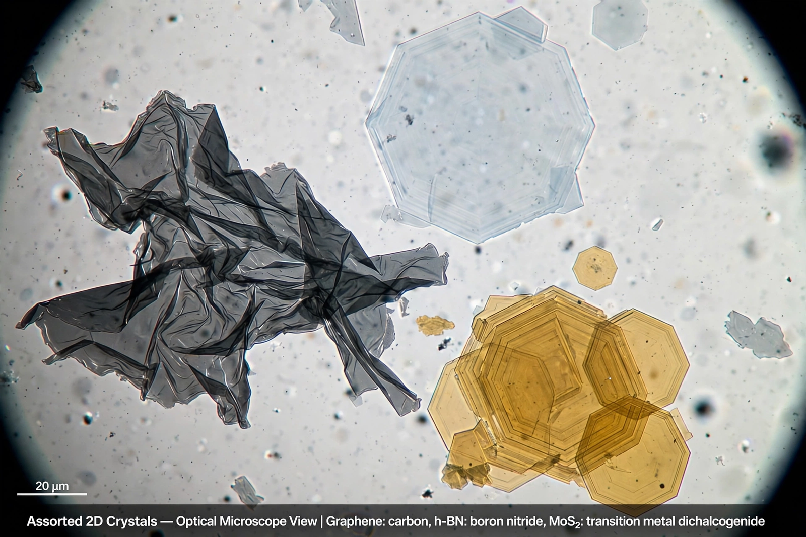

Two-dimensional materials

Two-dimensional materials (also known as 2D materials) are crystalline materials consisting of a single layer of atoms or molecules. The field began with the isolation of graphene — a single layer of carbon from graphite — by Andre Geim and Konstantin Novoselov in 2004, and it has since expanded to hundreds of layered materials that can be thinned to monolayer form.
| First example | Graphene (2004) |
|---|---|
| Classes | Elemental (Xenes), transition metal dichalcogenides, MXenes, layered oxides and nitrides |
| Key methods | Mechanical exfoliation; chemical vapour deposition |
Classes of materials
Beyond graphene, the principal families include hexagonal boron nitride (an insulator used as a substrate and encapsulant), the transition metal dichalcogenides such as MoS₂ and WSe₂ (semiconductors with direct band gaps in monolayer form), elemental analogues of graphene such as silicene, germanene, and phosphorene, and the MXenes — two-dimensional transition metal carbides and nitrides produced by etching layered ceramic precursors. Many of these crystals are the monolayer limits of familiar layered bulk materials, just as graphene is the single layer of graphite.
Heterostructures
Because the layers are held together by van der Waals forces, different 2D crystals can be stacked in arbitrary sequences without the lattice-matching constraints of conventional epitaxy. These van der Waals heterostructures allow properties to be combined or newly created — for example, superconductivity in twisted bilayer graphene at "magic angles", discovered in 2018, and tunnel transistors and light-emitting devices built from stacked monolayers.
Applications and challenges
Proposed applications include flexible and transparent electronics, sensors, membranes for water filtration and gas separation, energy storage, and catalysis. Challenges include scalable production (mechanical exfoliation gives high quality but tiny quantities, while chemical vapour deposition must reach comparable quality at wafer scale), environmental stability of some monolayers, and integration with existing semiconductor manufacturing.